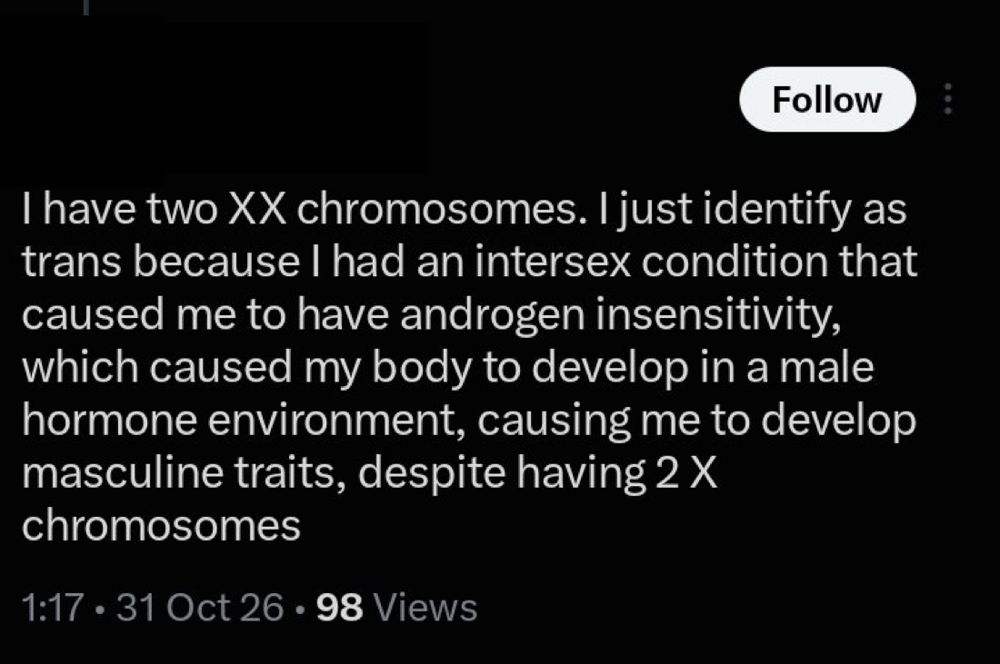

Claim
A post states that the author has two X chromosomes (46,XX) and that an intersex condition causing androgen insensitivity made their body develop in a male hormone environment, producing masculine traits.
Fact check
Androgen insensitivity syndrome (AIS) is caused by variants in the AR gene, which makes the androgen receptor. It affects people with 46,XY chromosomes. Because the body cannot respond fully, or at all, to androgens such as testosterone, AIS leads to female-typical or under-masculinized development, not masculine traits. The AR gene is on the X chromosome, and AIS is inherited in an X-linked pattern. People with 46,XX chromosomes are not affected by AIS in this way. When a 46,XX person develops masculine traits, the most common medical cause is congenital adrenal hyperplasia (CAH), a different condition in which the adrenal glands make too many androgens. Rarer causes include 46,XX testicular DSD and ovotesticular DSD.